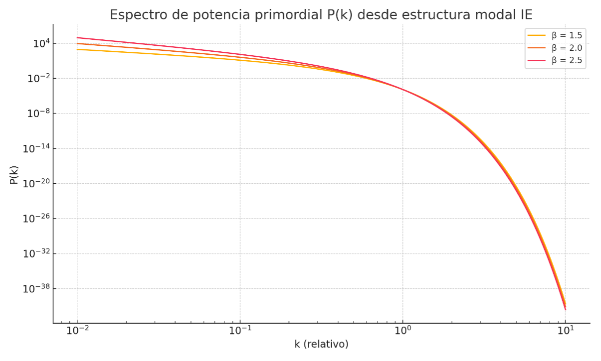
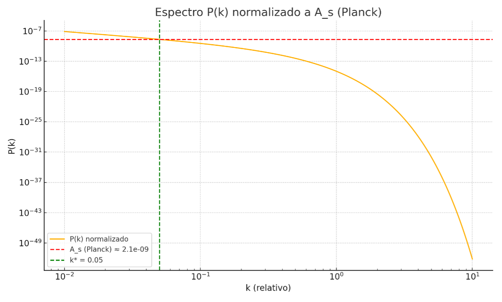
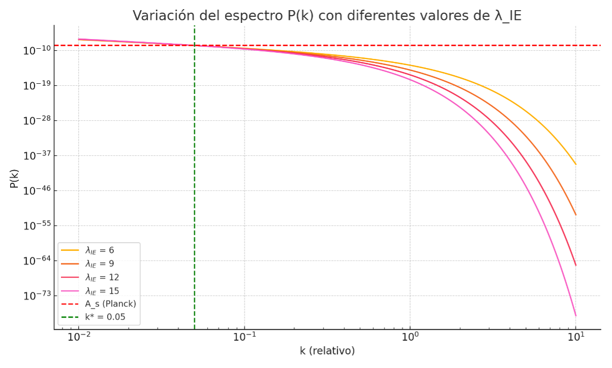
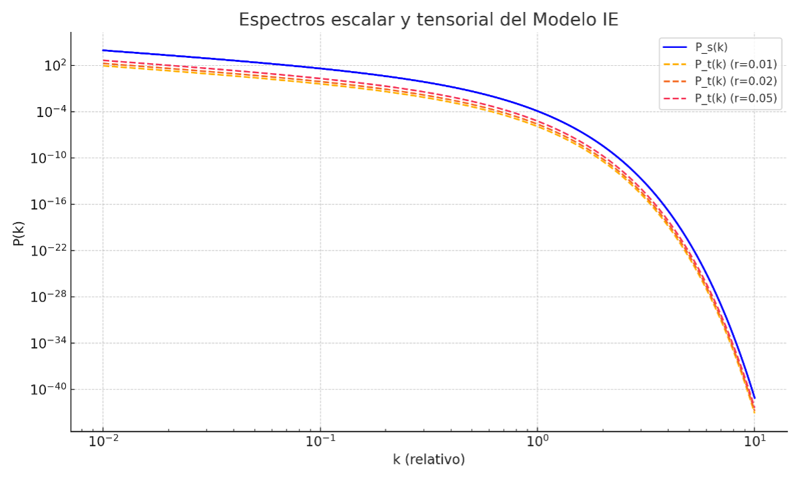

The Iterative Energetic (IE) Model proposes that primordial fluctuations originate from a stable quantum remnant structured by internal energy modes. These modal distributions, governed by a characteristic function P(k), give rise to an emergent power spectrum that can be compared with observational data from the early universe.
The modal energy distribution leads to the following spectral form:
P(k) ∝ k−β · exp(−λIE · k)
Here, β regulates the large-scale tilt of the spectrum, while λIE ≈ 9 represents an emergent structural constant derived from previous quantum remnant simulations.
The spectral index is extracted as:
ns(k) = d ln P(k) / d ln k
For β ≈ 2.0, we obtain ns ≈ 0.96, in excellent agreement with Planck observations (ns ≈ 0.9649).
The figure below shows the spectrum for different values of β:
Figure 8.1.1: Spectral shape of P(k) for β = 1.5, 2.0, 2.5
We normalize the amplitude using Planck's pivot scale at k* = 0.05 Mpc⁻¹ (As ≈ 2.1 × 10⁻⁹):
The required normalization constant is approximately 8.27 × 10⁻¹², which can be interpreted as a coupling factor between modal energy and observable density.
Figure 8.1.2: Normalized IE spectrum adjusted to Planck
Different values of λIE (6, 9, 12, 15) affect the high-k suppression in the spectrum:
Figure 8.1.3: Comparison of normalized spectra with varying λIE
The IE Model predicts the ratio r from At / As using the same modal framework:
| At / As | r |
|---|---|
| 0.01 | 0.010 |
| 0.02 | 0.020 |
| 0.05 | 0.050 |
Figure 8.1.4: Scalar vs. tensor spectra across different At / As ratios
The IE Model provides a coherent theoretical framework to derive the observed primordial spectrum without invoking inflation. Its predictions for ns, r, and the shape of P(k) fall within current cosmological bounds and are rooted in a physically motivated quantum structure. This sets the stage for comparing the model against further observational probes.